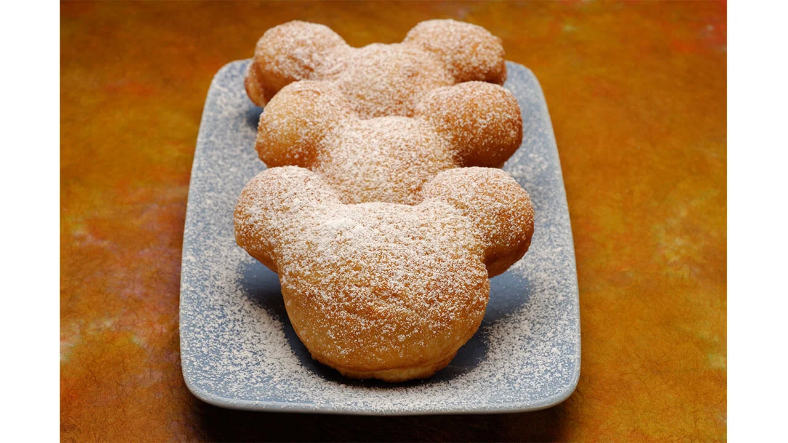

Disneyland Beignets recipe

Disneyland Beignet Recipe
Beignets that are overpriced but you gotta get them.
Ingredients
- 1tsp active dry yeast
- 3/4 cupp warm water(105°F)
- 1/4 cup sugar
- 1 egg whisked
- 1/2 tsp salt
- dash nutmeg
- 1/2 cup heavy whipping cream
- 2 tbsp vegetable shortening
- 3 1/4 cups all purpose flour
- vegetable oil for frying
- powdered sugar
Cooking instructions
- Add ¾ cup warm water to a small bowl. Sprinkle 1 tsp yeast on top and stir to dissolve. Allow the yeast to activate (about 5 minutes).
- In a large mixing bowl (or stand mixer), add the sugar, egg, salt, nutmeg, heavy cream and shortening. Mix to combine.
- Pour in the activated yeast and mix.
- Add the flour to the mix. Use the dough hook attachment on a stand mixer and mix on medium speed until all of the ingredients are combined and dough is smooth but still slightly sticky.
- Form a ball with the dough and place in a greased bowl. Cover and let rise for about 1 hour.
- Use a deep sided heavy pot and add 3 inches of vegetable oil. Heat over medium high heat until oil reaches 370°F (cooler than this won't cook the beignets fast enough and hotter than this will burn them quite easily).
- On a lightly floured surface roll out the dough until it is ½ inch thick. Use Mickey Cookie cutter to cut out Mickey-shaped pieces of dough.
- Working in batches fry the beignets until golden brown, about 1 minute on each side.
- Use tongs to remove the beignets from the hot oil. Place on a paper towel lined plate to drain. While the beignets are still warm, dust them completely with powdered sugar. Serve immediately.
Thats going to be it now enjoy them beinnys.